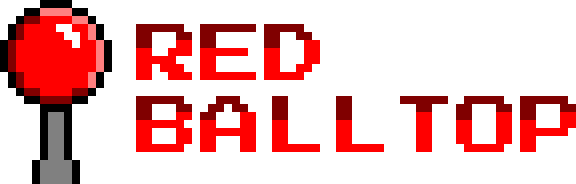

Established 2020. Based in Long Island, NY, USA.
Created by Marc Marta, CEO & Chief Programmer.
Email: marc.marta@redballtop.com
GitHub: github.com/mmarta
Current Projects:
- Puzzle Shooting Project (JAMMA Arcade Game)
Completed Projects:
- Sharpgunner Gallery (JAMMA Arcade Game)
- Lazy LEGO Game Boy Micro Arcade Balltop Mod
- Moon War DB15 Arcade Controller w/ Arduino Uno
- Virutal DB15 Online/Remote Arcade Controller
- Konami Hyperstick DB15-modded Arcade Controller
- Konami Hyperstick modded for Game Boy Player
Arcade 8-bit PCBs in HD:
- Block Hole - Konami
- Extermination - Taito/World Games
- Gyruss - Konami/Centuri
- Lizard Wizard - Sunn/Digitrex Techstar (BitKit FPGA)
- Mario Bros. - Nintendo
- Mikie - High School Graffiti - Konami
- Raimais - Taito
- Sharpgunner Gallery - Red Balltop
- Space Cruiser - Taito
- Tac/Scan - Sega (Game Elf VGA)
- Tempest - Atari (Game Elf VGA)
Arcade Gradius series (non-8-bit) PCBs in HD:
- Life Force - Konami
- Nemesis - Konami
- Salamander 2 - Konami
Arcade Space Invaders series (non-8-bit) PCBs in HD:
- Majestic Twelve: The Space Invaders Part IV - Taito